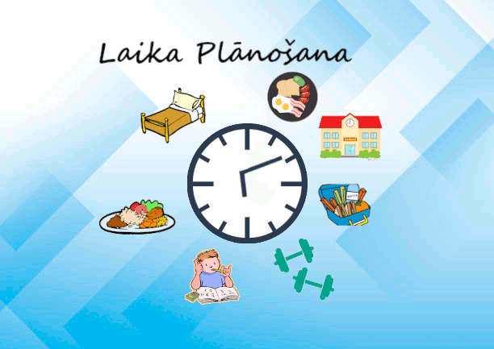
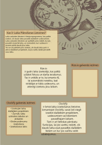

Rakstrgrafika
Izmantojot "Gimp" aplikāciju,rakstrgrafikā apguvu veidot zīmējumus,rediģēt bildes un izveidot animācijas


Izmantojot "Gimp" aplikāciju,rakstrgrafikā apguvu veidot zīmējumus,rediģēt bildes un izveidot animācijas

Izmantojot "Inkscape" aplikāciju, vektorgrafikā tika apgūta attēlu veidošana - logo un plakāti.

Pirmajā semestrī tika apgūta prasme veikt video montāžu: izmantojot aplikāciju "Capcut" izveidoju video, kas parādīja 3D kuba veidošanu.
Izmantojot "Word" iemācījos rediģēt un formatēt tekstu tekstu, izveidot veidnes, veidot tabulas.
Laika plānošanas aplikācijas ZPD stilā
Izmantojot "Excel" apguvām prasmi formatēt un apkopot lielu datu apjomu, kā arī veidot grafikus un izmantot attiecīgās formulas
Autobusi, laiki